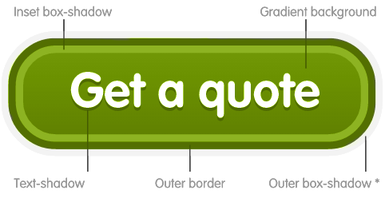
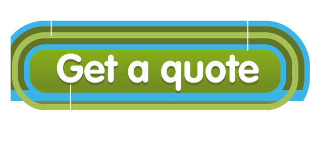

We use button shapes to distinguish a variety of calls to actions and we’ve designed these shapes to be easily recognisable and visually appealing.
Create buttons from button or a elements and change their colours and sizes by using the modifier classes listed.
Anatomy of a button
We use CSS borders, gradient backgrounds and a combination of inset and outer box-shadows to create our button shapes and to give them a three-dimentional appearance. Our button text also has a subtle text-shadow. The direction of the gradient background and text-shadow is reversed when a person hovers over a button shape.

* Use RGBA transparent colour values for the outer shadow to help buttons blend with the background.
Button types
Where possible use only one primary action button per content region or on one page. Don’t choose a different colour button without considering the reason why that button has been included. For example, don’t use red buttons for any reason other than to indicate that a person should proceed with caution.
Primary actions
Secondary actions
Prominant links
Proceed with caution
Design notes
Where possible use only one primary action button per content region or on one page.
HTML
<button class="btn"></button>
<button class="btn btn--link"></button>
<button class="btn btn--ketchup"></button>
CSS/Sass
Modifier classes
.btn
.btn--link
.btn--ketchup
Button sizes
Use standard size button shapes for the majority of calls-to-action to reserve smaller and larger sizes for specific purposes. Use large buttons for a single important action and small buttons in confined spaces, for example inside tables. Use block buttons to fill 100% of the width of their parent container.
Small
Standard
Large
Block
Design notes
Use standard size button shapes for the majority of calls-to-action to reserve smaller and larger sizes for specific purposes.
HTML
<button class="btn"></button>
<button class="btn btn--small"></button>
<button class="btn btn--large"></button>
<button class="btn btn--block"></button>
CSS/Sass
Modifier classes
.btn
.btn--small
.btn--large
.btn--block
Button groups
Give smaller calls-to-action greater emphasis by grouping several together into one larger component. Groups can also be used where there are two options to choose from e.g. 'find out more' and 'get a quote'.
Sky panels
For maximum impact, use only large Lime buttons on Sky panels. These panels are dedicated to a precise type of content and ideally should contain only one call-to-action.

Design notes
None available.
HTML
<button class="btn btn--lime"></button>CSS/Sass
Modifier classes
.btn--lime